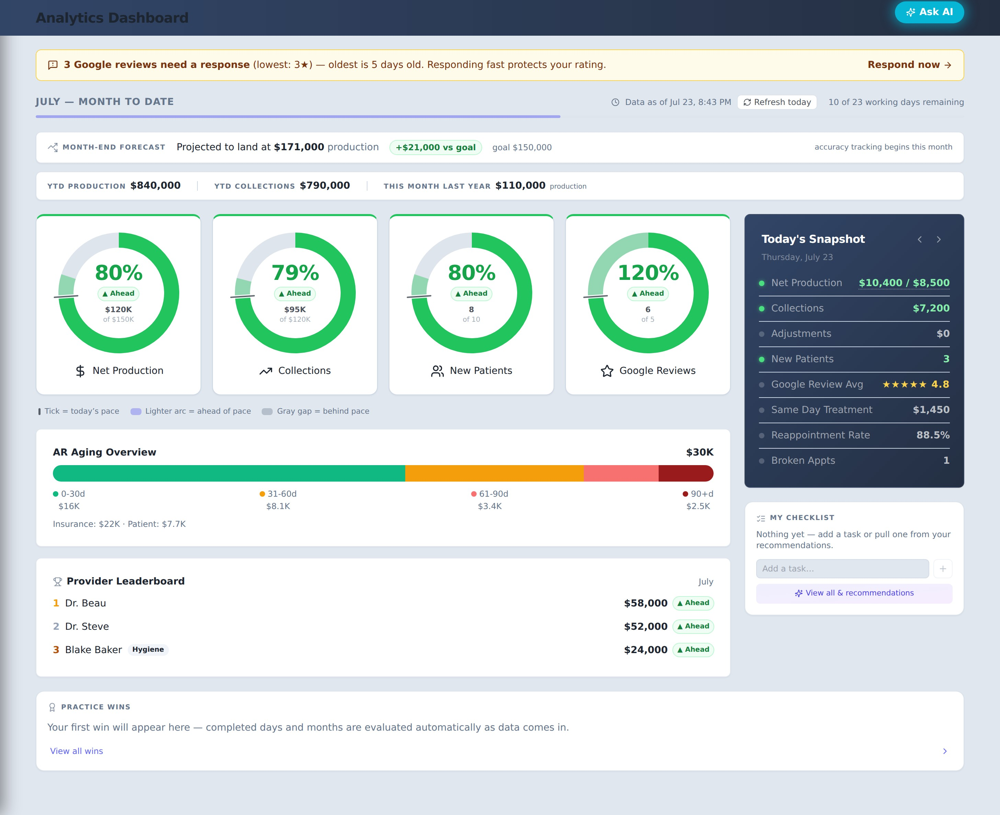
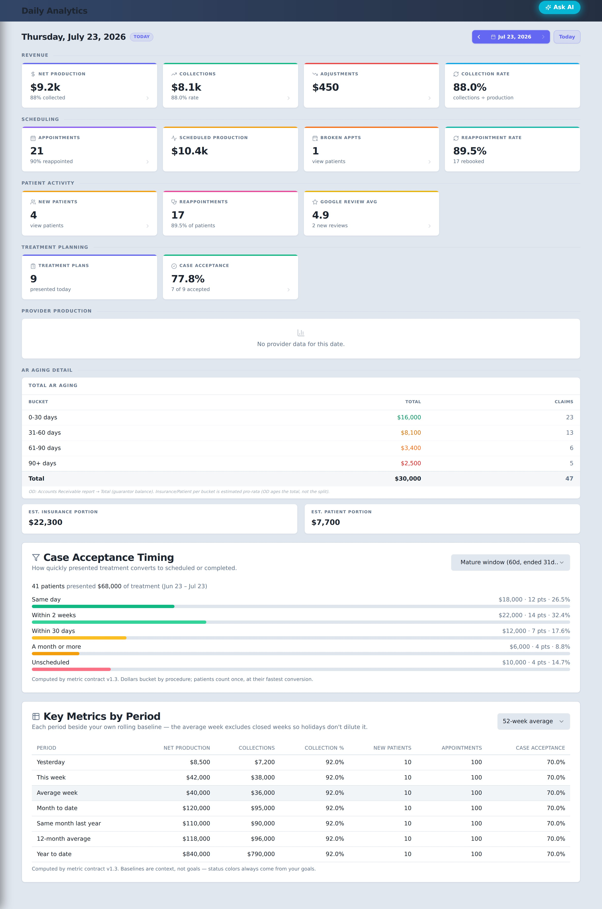
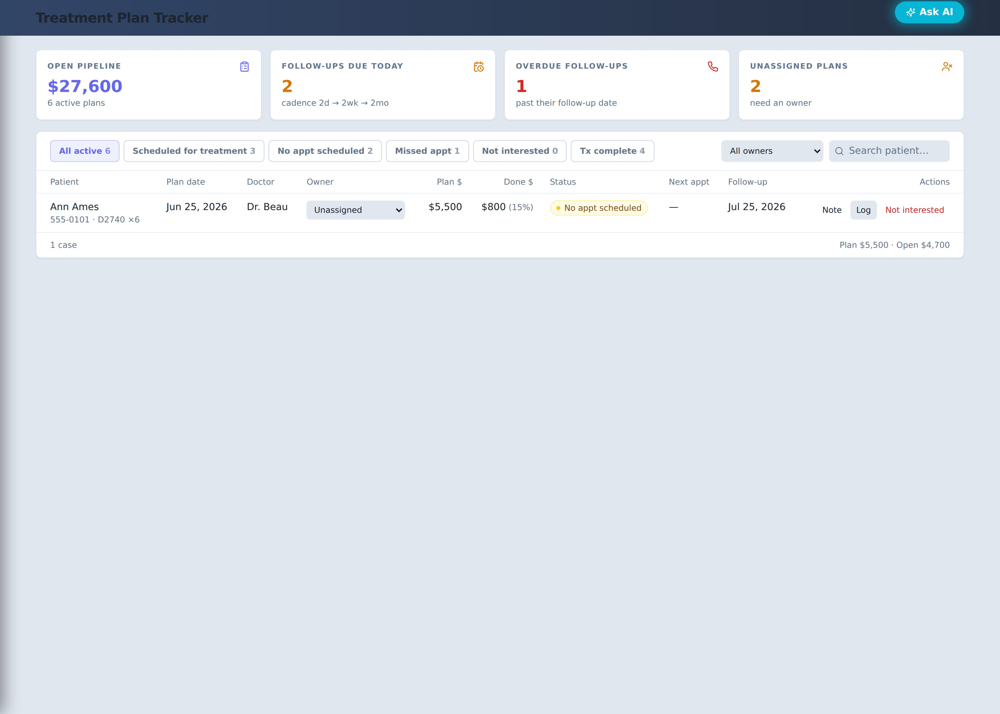
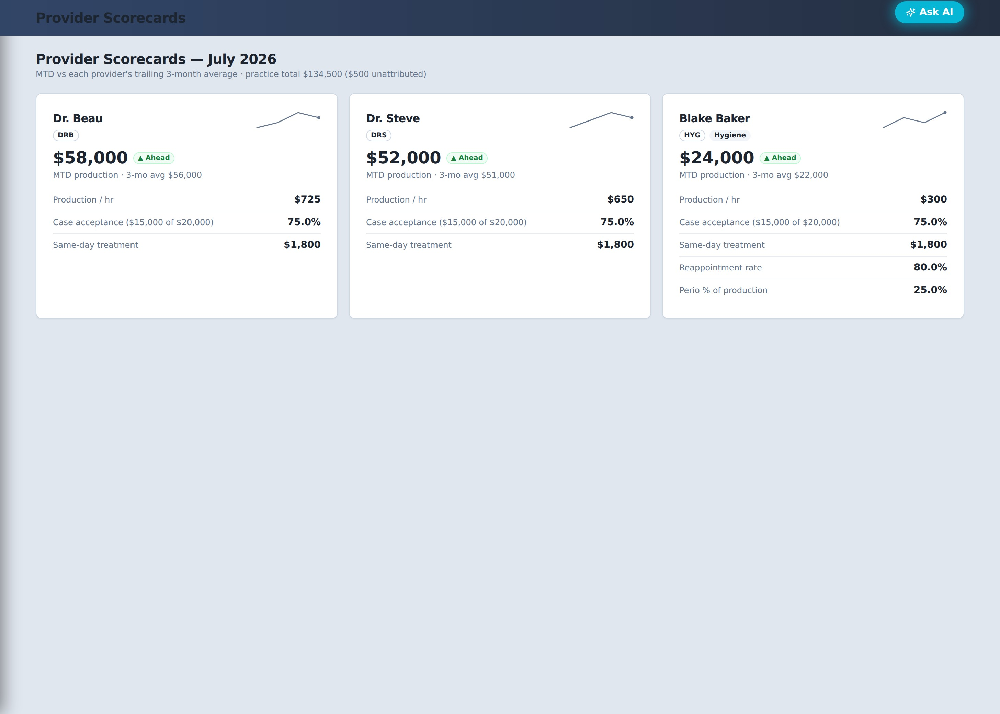
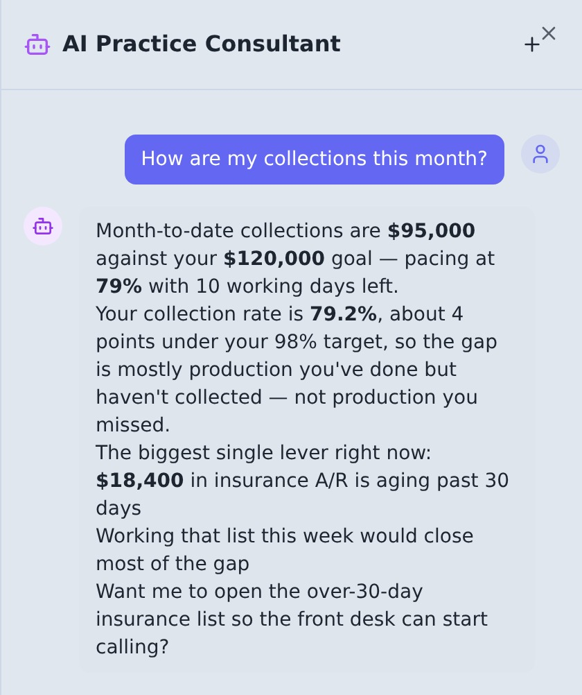
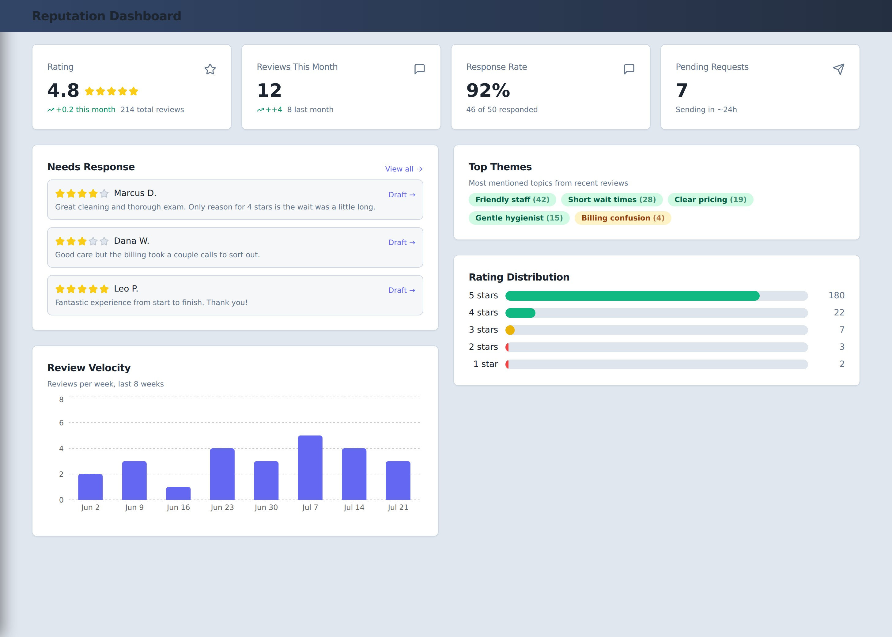
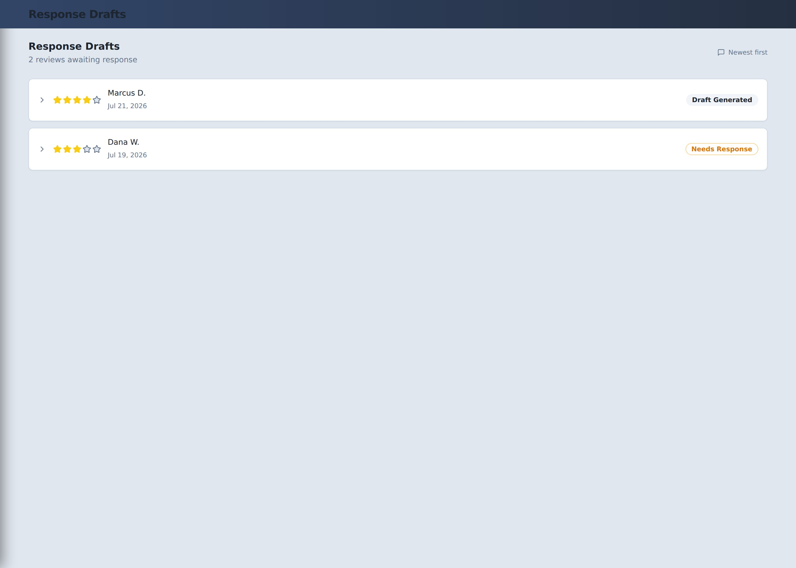
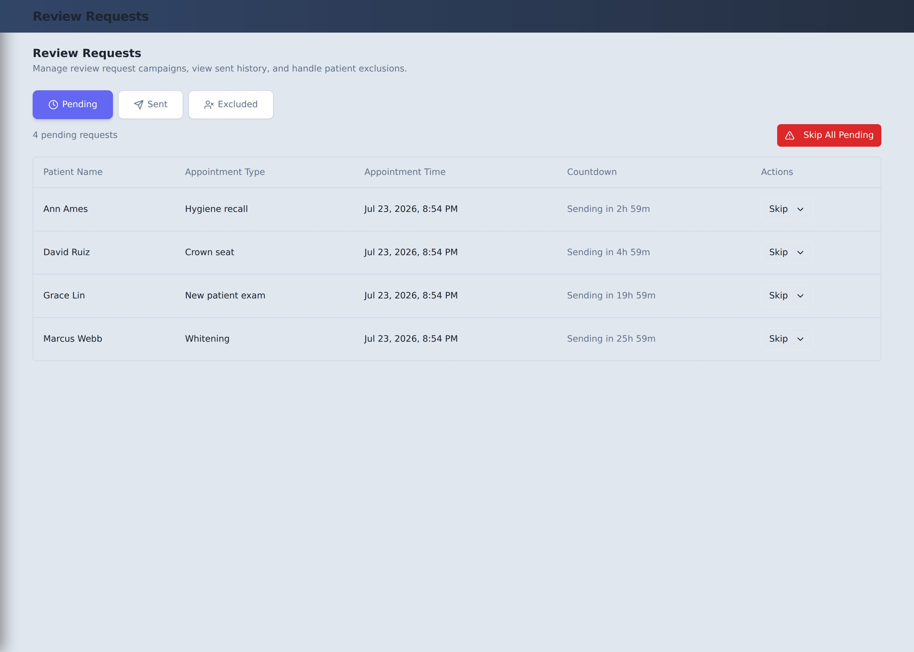

For Open Dental Practices
Bridge Analytics turns your Open Dental data into a live daily operating system — production pace, patient opportunities, team priorities, and your Google reputation, in one place.

Why Bridge Analytics
Most practices don't have a data problem — they have an action problem. The numbers are buried in reports, opportunities are scattered across the patient database, and owners find out about a bad month after it's already over.
Know what happened. Understand why. Know what to do next.
Working-Day Pacing
Bridge Analytics measures progress against the working days your practice actually has — not the calendar. A month can look fine on day 10 and already be behind.
You'll see ahead / on pace / behind for every goal, so the question changes from “why did we miss the number?” to “what can we do today to change it?”


Revenue Recovery
You may not need more patients — you need visibility into the ones you already have. Bridge Analytics builds prioritized patient lists, ranked by recoverable treatment value, so the front office starts with the patients that matter most.
The Daily Rhythm
Not yesterday's numbers — a plan for today.
Delivered automatically to owners and admins at closing time.
Team Performance
Access-controlled scorecards show each provider's production, pace against their own trend, production per hour, case acceptance, same-day treatment, reappointment, and perio share.
Compensation-sensitive data stays restricted to authorized users, and provider totals reconcile against the practice total.


AI, Grounded
Generic AI gives generic advice. Bridge Analytics surfaces prioritized daily insights and answers questions about production, collections, scheduling, patients, and trends.
It narrates the numbers the system actually computed — never inventing figures that contradict your dashboard.
Bridge Reputation
Reputation isn't a vanity metric — it's your next new patient's first impression. Bridge Reputation asks happy patients for a review, drafts a reply to every review that comes in, and shows you exactly what patients keep praising or complaining about — all beside the production numbers those reviews drive.
Reputation Dashboard
Rating and month-over-month trend, reviews this month versus last, your response rate, and how many review requests are queued — the whole picture in four numbers, then the detail underneath.


AI Response Drafts
The moment a review syncs, Bridge drafts a response in your practice's voice — warm, specific, and on-brand. Your team reads it, tweaks a word if they want, and posts. What used to sit unanswered for weeks gets handled in seconds.
You set the tone and the guardrails; a human always approves before anything goes public.
Review Requests
Most five-star patients would leave a review if someone asked. Bridge asks for them: after the right appointments, it queues a request and sends it at the right time, so your review count climbs without anyone remembering to do it.

Built on Trust
Centralized metric calculations, so every view agrees.
Every drill-down reconciles with headline totals.
See how current your data is, with on-demand refresh.
A failed sync is never shown as zero activity.
Role-restricted, audit-logged patient views.
Provider totals tie back to the practice total.
Built by Dentists
Bridge Analytics was built to solve the problem the founders kept seeing: plenty of data, too little clarity about what to do next.
Practicing dentist, multi-office owner, and national dental coach.
Practicing dentist, multi-office owner, and national dental coach.
Johns Hopkins–trained software engineer with 20+ years in healthcare software, including Cardinal Health and McKesson.
One System, One Price
Dental performance platforms in this category run $279, $350, $399 — some $499 per month, before setup charges, extra modules, or AI upgrade fees.
Per location, per month. Billed monthly.
Start Bridge AnalyticsCheckout takes two minutes. Then we schedule your onboarding call and connect your Open Dental data.
Use Bridge Analytics for 30 days. If we can't accurately display your agreed core metrics, produce usable patient opportunity lists, and give leadership a clearer daily view, contact us — we'll work to reconcile the data, and if we can't deliver what was promised, we'll refund your payment.
Questions
Get Started
No setup fee · No contract · Unlimited users · 30-day guarantee